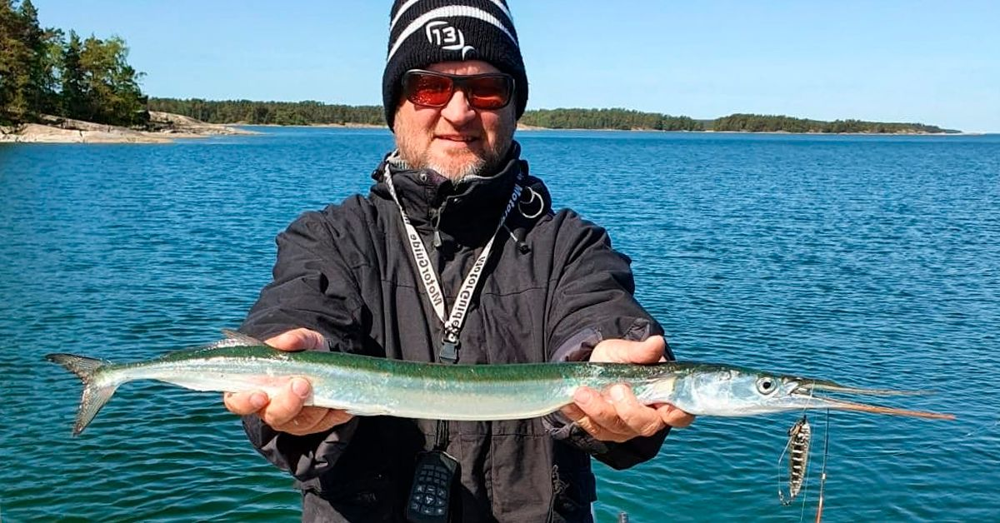
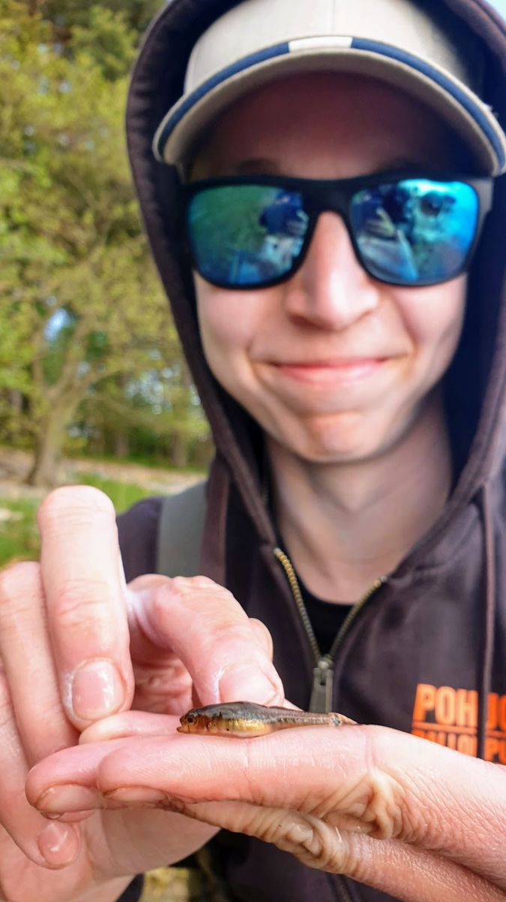
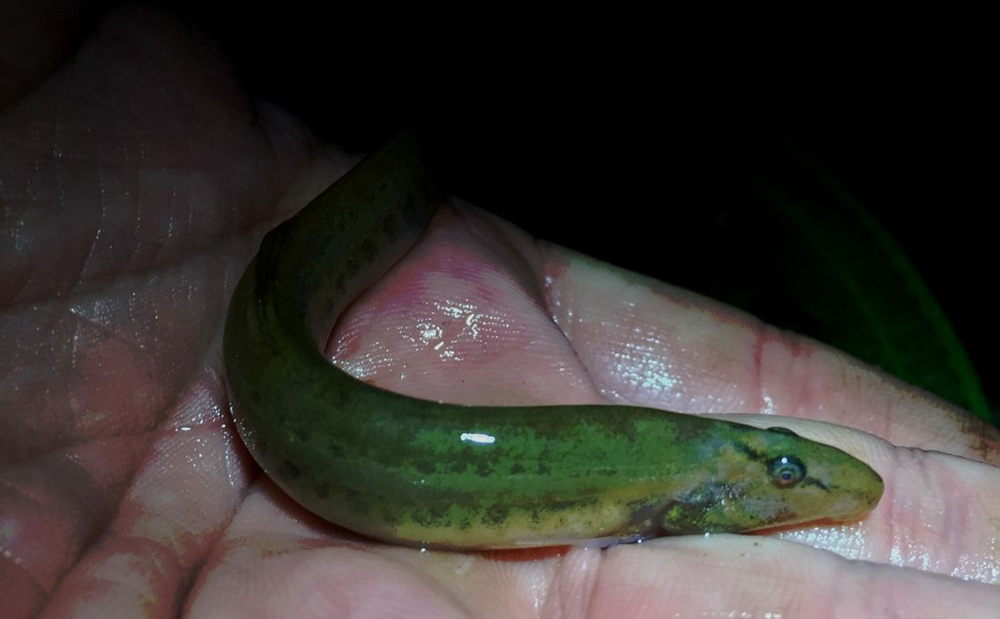
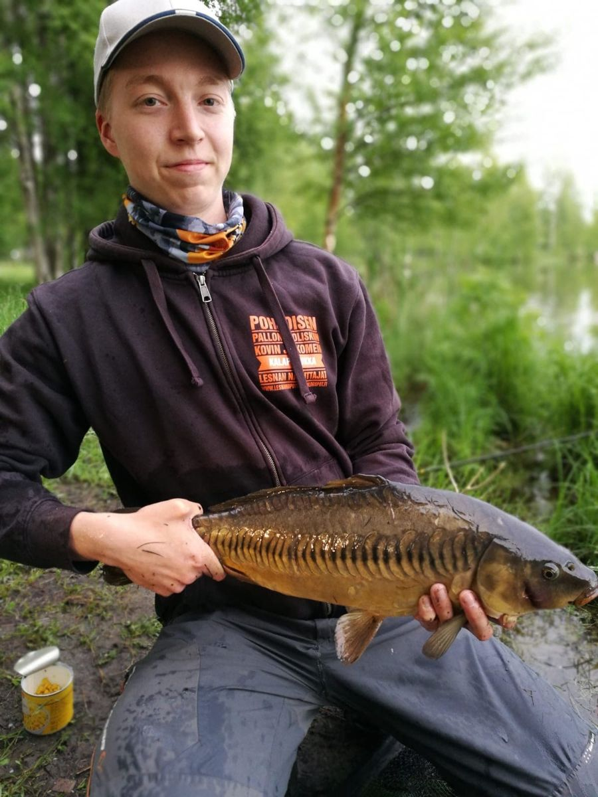
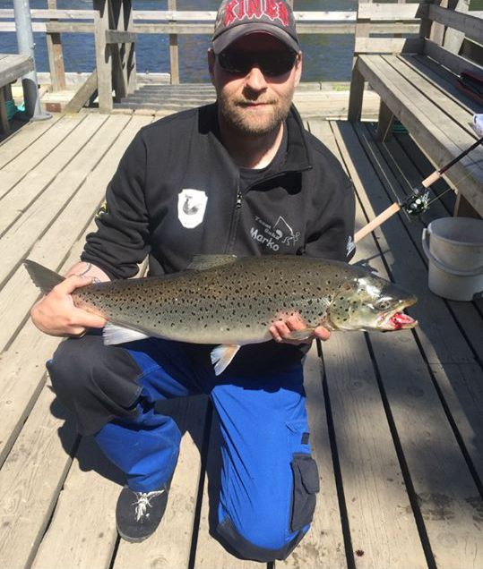
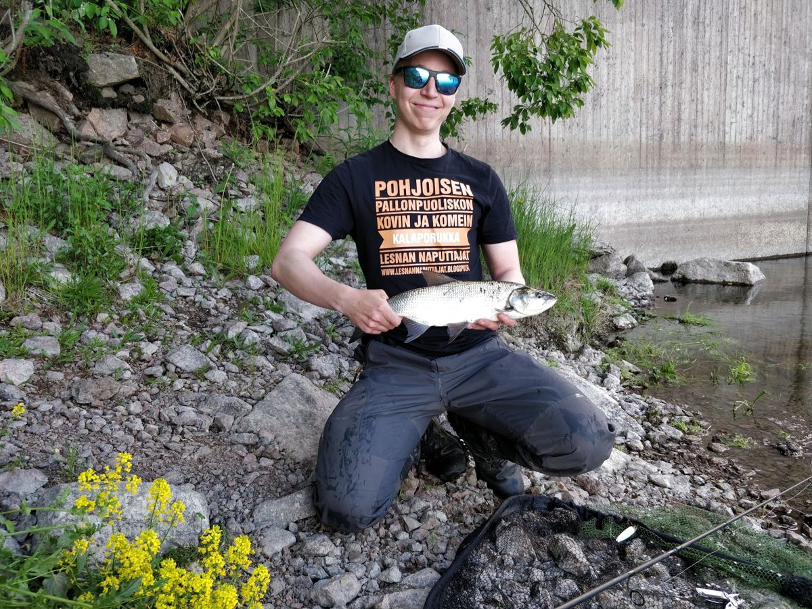
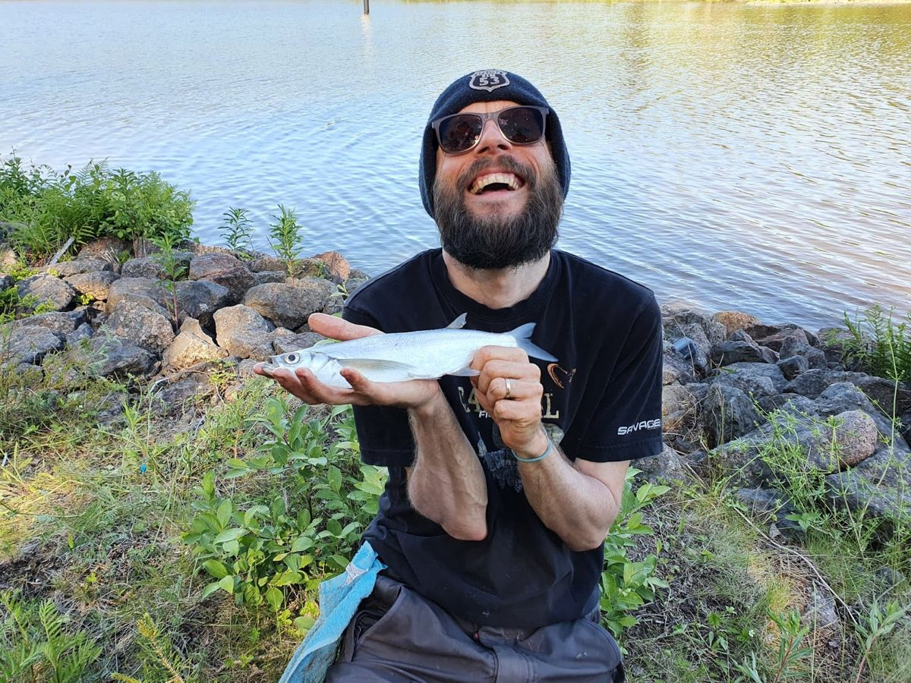
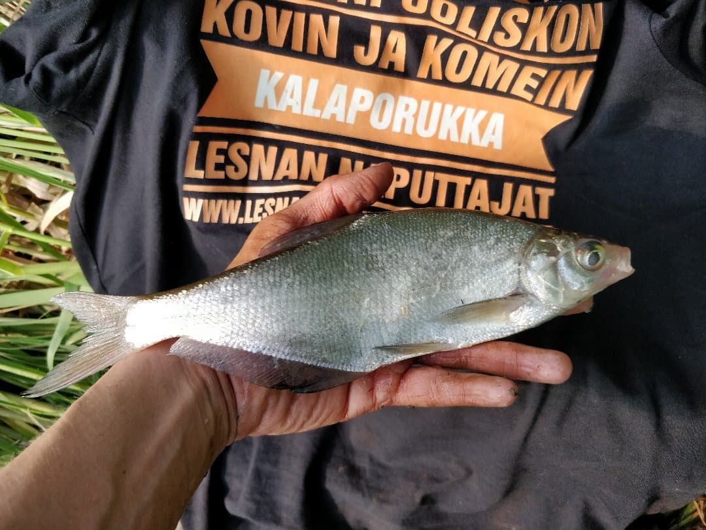

Blogitekstit · Heinäkuu 2020
Kesäkuu - huikeita onnistumisia
Kaupallinen yhteistyö: Paitakulma.fi


Kesäkuu, normaalisti kuukauden alkupuolella toivotaan Kalamaratoneissa hankituista rasituksista ja väsymyksestä, mutta ei tänä tänä vuonna. Tänä vuonna nautittiin upeista onnistumisista toukokuulla ja samaa linjaa jatkettiin myös kesäkuun alkuviikoilla.
Samaa onnistumisten listaa jatkettiin kun Miika Kovanen teki paikkoreissun seitsenruototokkojahtiin jolle minä hyppäsin mukaan. Tuo retki tuotti toivotun tuloksen ja molemmille yhden lajipisteen. Retkitarinan voi lukea tästä.


Upeaa huomata kuinka kalalajiin tutustumalla löytää sen asian mistä lajin tunnistaa ja lopulta myös onnistuu sen nappaamaan. Näin kävi ensiksi seitsenruototokon kanssa ja myöhemmin myös särmäneulan.


Kotkassa Marko Hakkarainen innostui ja nousi rantanuoliaisen (Gobiusculus flavescens), törön (Gobio gobio) ja muutaman muun lajin siivittämä jo 30 lajiin tälle vuodelle. Hitaasti, mutta varmasti lajilista kasvaa kohti uutta kymmenlukua. Markon rantanuoliainen oli 51 eri laji kuluvalle vuodelle, minkä seurannassa mukana olevat ovat pyydystäneet Suomen vesistä.

Kuun alku tarjosi myös minulle mahdollisuuden lähteä nokkisjahtiin Mikaelin kanssa. Tarjousta ei pitkään tarvinnut miettiä ja kyllä oli huikea reissu. Tarina kahden elämänpisteen reissusta löytyy tästä. Listalle härkäsimppu, särmäneula (Syngnathus typhle) sekä nokkakala (Belone belone).


Miikan kesäkuun ensimmäinen viikonloppu meni Tampere - Loimaa akselilla. Perjantai ilta alkoi Pahalammella josta kahdeksan suutarin nappaamisen jälkeen lajipisteeksi nro. 44 nousi vihdoin karppi (Cyprinus carpio).
Miika jatkoi Loimaan suunnilla tykittämistä kun töröjen (Gobio gobio) onginnan sivutuotteena nousi myös säyne (Leuciscus idus) lajilistalla ja näin kärkipaikka irtosi ensimmäisen viikonlopun rypistyksellä lajimäärällä 46.


Marko tempaisi vuosipisteissa jo yli oman ennätyksensä. Tykitys alkoi Korkeakosken heittolaiturilta upealla yli viiden kilon taimenella (Salmo trutta). Taimenen jälkeen tie toi pääkaupunkiin ja lajipisteiksi nousi allikkosalakka, hopearuutana sekä suutari. Lajeja kasassa kuluvalle vuodelle 35.
Myös Justus lävi vierailulla Stadissa ja nappasi allikkosalakan (Leucaspius delineatus) ja hopearuutanan (Carassius gibelio) lajilistalleen, lajeja kasassa 31.


Loimaalta vain pari kovaa tälliä ja rankkasateessa kastunut kalamies. Lopulta sitkeä yrittäminen palkittiin ja Kymijoelta napsahti toutain (Aspius aspius) Miikan lajilistalle.
Piipahdin perjantaina 11.6.2020 Kotkassa. Listalta puuttui neljä lajia; säyne, seipi, törö ja rantanuoliainen. Näistä kaksi ensimmäistä saisin ongittua Ilomantsista kesälomareissulla ja kahden jälkimmäisen kalastamisen suhteen ei hirveä kiire olisi.

Halu kalalle oli suuri ja keli lupaili pläkää, siis kalalle. Lopputulos; säyne, törö ja seipi ennen pimeätä ja heti sopivan pimeysasteen saavuttua ensimmäinen nähty rantanuoliainen ylös. 4/4, 100% onnistuminen. Tämän huikean onnistumisen tarinan voit lukea tästä.

Saimaan kanavalta Olli-Pekka Turunen nappasi vuoden ensimmäisen valkoevätörön (Romanogobio albipinnatus) näytille. Onnea uudesta elämänpisteestä! Olli-Pekka sen keksi. Valkoevätörön voi lirkkiä ja näkökalastaa. Kalat tulevat laivojen ohi seilatessa muurin juureen pyörimään ja niitä voi yrittää jallittaa näkökalastaen. Näin niitä kalojen pyyntisaloja keksitään.
Justus ja Niko pyörähti Hangossa, ensin mainitulle seitsenruototokko ja molemmille kampelat. Kotimatkalla vielä Porlasta viisipiikit ja Nikolle allikkosakkakin.
Mikael kävi onkimassa muutaman tunnin lahnoja ja pasureita kunnes lopulta tavoitteena ollut sulkava nousi kuvattavaksi kuten kirjolohikin, 43 lajia kasassa ja matka jatkuu kohti 50 lajia.


Miekkasärki (Pelecus cultratus) tarjosi haastetta, tuon tarinan ja lajin kalastusvinkit voi lukea tästä. Samasta jutusta löytyy myös vinkit valkoevätörön kalastamiseen. Täydellinen onnistuminen minulle ja Miikalle, lajeja molemmilla nyt 49.
Turun suunnalta on löytynyt selvästi uusi karppilampi, koska sieltä on mm. Mikael ja Olli Salonen hakenut lajipisteensä. Tämän tiedon jälkeen löytyy alle 100 km päästä Turun keskustasta kaikki lampilajit; karppi, piikkimonni, allikkosalakka, hopearuutana, ruutana, suutari.
Juuson varusmiespalvelus päättyi juhannukseksi ja odotettavissa on usean lajin lähiviikkoja. Kireitä Juuso ja stemppiä minun ja Miikan karkumatkan kaventamiseen.
"Tajusin äsken että tästähän tuli aika perverssinen projekti. Etsin eilen styroxpalloja ja löysin tarjouksesta styroxmunia. Ajattelin että nehän ajaa saman asian. Äsken tajusin että tärpin tullessa muna nousee pystyyn 😬 ehkä se pallo olisi ollut siveellisempi." -Miika
Virityksistä huolimatta jäi hänellä ankerias saamatta, samoija pummeja kuului myös Kotkan suunnalta. Mikael oli tiputtanut kaksi ja Mikko yhden rantanuoliaisen. Sama meno oli jatkunut myös ensimmäisen yön ja päivän osalta Saimaan kanavalla. Miekkasärkeä ei kuulunut eikä valkoevätöröjä näkynyt.


Huittisten nurkilla Miika nappasi sulkavan ja oli näin ensimmäinen 50 lajin saaja kuluvalle vuodelle. Aikaa siihen meni 179 päivää. Sulkava oli samalla hänen elämänpiste nro. 54. Miikan huikea päivä sai kliimaksinsa, kun rantanuoliainen nousi vielä Kotkasta lajiksi nro. 51.
Myös Samat ruutanat porukka kävi sulkavaongella Loimijoella saaden uudet elämänpisteet listoilleen.
Omat karpin pyyntiyritykset suuntautuivat Tampereen keskustan kupeessa sijaitsevalle Pahalammelle. Näistä ensimmäisestä retkestä voit lukea tästä ja lopuista ei paljon erinlaista tarinaa syntynyt.
Valitettevasti kalastus näytti myös nurjan puolensa. Kaksi retkikuntaa Turun suunnilta joutui toteamaan rantanuoliaisen, miekkasärjen ja valkoevätörön kinkkiseksi pyydystettäväksi.
On aika heinäkuun, lapin lomareissun ja ennätyksen tekemisen joka on enään neljän lajin päässä. Lomareissu on suunniteltu niin, että lajit; karppi, puronieriä, kirjolohi, sulkava, kirjoeväsimppu, harjus ja rautu osuu matkan varrelle, nyt vaan toivotaan ahdin olevan antoisalla päällä.
Kireitä kaikille heinäkuulle!
Kesäkuun retkistatistiikka
- lajeja kasassa 49 | reissuja 42 | tunteja 382 | kilometrejä 7639
Facebookin Lajikalastus 2020 listaus
Seuraa ennätyksen etenemistä
Pidän kirjaa lajilistasta ja tarkemmasta retkidatasta Google -taulukossa, joka löytyy jokaisesta ennätysyrityksen postauksesta. Tästä linkistä taulukko avautuu uuteen ikkunaan.
Seurantatilanne löytyy myös blogini oikeasta yläreunasta.
Vuoden aikana ennätysyrityksessä kulkee mukaan myös tämä kalataitelija-graaffikko Sakke Yrjölän suunnittelema SPECIES FIN 53 -merkki.
Paitakulmassa painatin pipoon ja lippikseen saman merkin. Tavoitteeni on saada aikaiseksi 53 saaliskuvaa tekstin alussa tekemääni taulukkoon joissa kaikissa kuvissa näkyisi tuo kyseinen tunnus.
Paitakulma on Suomalainen perheyritys, joka haluaa panostaa laatuun ja asiakastyytyväisyyteen. Tutustu yrityksen palveluihin tästä.